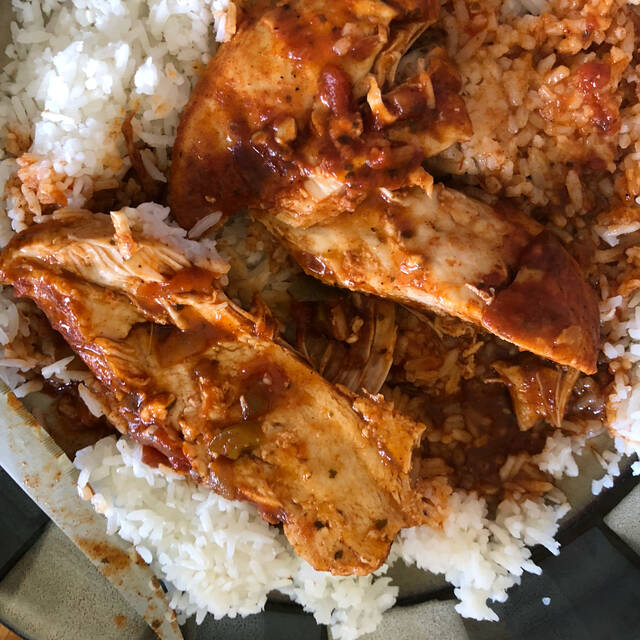

Salsa Chicken

Description
A tasty Mexican-themed meal! Frozen chicken breasts are combined
with taco seasoning and salsa for an easy weeknight meal. You
can use the meat for tacos, burritos, or as a topping for baked
potatoes.
Ingredients
- 1 pound frozen skinless, boneless chicken breast
- 1 ounce packet taco seasoning mix
- ½ cup salsa
- ½ cup low-sodium chicken broth
Steps
- Place chicken breasts in an Instant Pot. Sprinkle
all sides with taco seasoning. Pour salsa and chicken
broth on top.
- Close and lock lid. Select Poultry setting; set timer for
15 minutes. Allow 10 to 15 minutes for pressure to build.
- Release pressure using the natural-release method according
to manufacturer's instructions, about 20 minutes. Unlock and
remove the lid.
- Shred chicken and serve as desired.